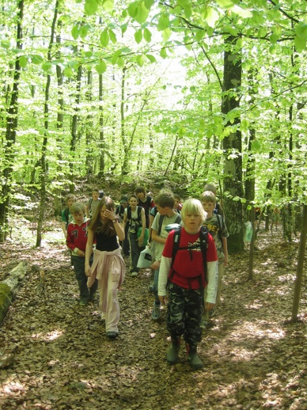

Ut i naturen - både i Villmarkstunet og Bøketunet
Opplevelsespakker fra Aarholt-Tunet Gjestegård med
- Villmarksopplevelser
- Mat
- Overnatting
Går du innover i Aarholt-skogen i Stokke vil du komme over en liten perle av et villmarksområde. Kanskje ser du elg, rådyr, rev, grevling og bever. Her er svært variert fugleliv og en utrolig variert blandingsskog. Et spennende, kupert terreng ved den nordlige grensen for viltvoksende bøkeskog i Norge.  Området rundt Aarholt-tunet er - blant de få i Vestfold som er med på Nasjonal registrering over "områder med stor verdi for kulturlandskapet".
Villmarkstunet
Her i Aarholt-skogen litt over en kilometer fra gårdstunet, går en elv hvor det også er mye spor etter beverens herjinger. Navnet ”Aarholt” kan antagelig komme av ”Holtet ved Aaen – elva”. Og i kort avstand fra elva finner du Villmarkstunet. Et område med små gapahuker for overnatting og en MEGA-huk for grilling, kveldskos, og overnatting. De ti små gapahukene kan huse 30 stk. til sammen, og MEGA-huken (bildet over) – 30 alene til overnatting eller 60 til bespisning inne rundt bålet - hvis det regner ute. MEGA-huken er sannsynligvis ulikt alt annet du har sett. Med syv takretninger, overbygget bålplass i midten og gulvplass som i et slags amfi - til å sitte og kose seg på. Alle gapahukene har liggeunderlag på gulvet.
{kind=link}
Maten varmer vi på forskjellig vis. Enten som karbonader på takke, lapper på takke (takka er en gammel jernplate - se bilde), pinnebrød, pølser på pinner, suppe over bål el.l. Maten smaker så ekstra godt når en spiser ute. Det blir en kjempesosial aktivitet. Særlig når vi forteller historier til, eller deltakerne selv forteller vitser, gåter eller historier.
Mellom gapahukene i Villmarkstunet er det sittegrupper rundt et utebål.
På området er også to doer, tosetere – også på villmarks vis.
Skulle du ønske å ta med deg foreningen, skoleklassen, foreldre, speider’n, konfirmantene .... bør du vite om villmarksaktivitetene der.
Aktiviteter som kan bestilles:
- Teamløype med sammenspleisende og utfordrende program. Skyting med pil og bue eller luftgevær. Fisking med enkelt snøre.
- Lommelyktsafari. Nattorientering etter refleksbrikker hengt opp i trærne. Svare på poster.
- Felling av trær, - her får du lov å prøve deg selv på å felle ordentlige trær, og oppdage ”hengsle-prinsippet” for fellingen for å få trærne til å falle i riktig retning.
- Flåtepadling på elva og vannet med årer og vester, bading.

Litt informasjon:
Skoleklasser og familie-/barnegrupper kan bestille opphold i villmarksområdet. Enten hel-døgnsopplevelser (evt. flere døgn) eller MINI-døgn (se under).
Gapahukene (både den store, og de små) har liggeunderlag utover gulvet. En kan ha med eget liggeunderlag for å ligge enda mykere.
Aarholt-tunets egne aktivitetsledere kan leies inn for aktiviteter i tillegg til at gruppa kan ha egne aktiviteter.
Det er anbefalt at Aarholt-tunet har noen timers program – for å utnytte mulighetene det er lagt tilrett for i området.
Aarholt-tunet følger gruppa ned til området, og eventuelt henter. Avstanden er 20 min. gange (1,3 km), men kan gjøres om til en time ved å gå en annen vei for å oppleve bever-avgnagde trær lenger ned i elva – og for å gi opplevelse av at man er svært langt inn i villmarka.
Priser og tidspunkter: se priser
Bøketunet
Aarholt-tunet har bygget opp et litt mindre overnattingssted (til 25 stk) bare 500 meter fra gårdstunet. Vi har kalt stedet "Bøketunet" fordi det ligger på en liten høyde med lyse bøketrær rundt. (Se bilde.) Her er det også mulig å frakte inn utstyr med bil/traktor. Og her er en nærmere om en ønsker å bestille powerløypeprogram, klatring og dyrestell.
MINI villmarksdøgn i Villmarkstunet eller Bøketunet
Gruppa kommer til Aarholt-tunet kl. 17.00 – 18.00 på ettermiddagen, og har med seg egen grillmat og matpakke til frokost. Vi går straks til bestilt tun, griller medbrakt, koser oss, har familieunderholdning, allsang, samt annet avtalt opplevelsesprogram ute i skogen eller rundt leirbålet.
Eventuelt medfølgende søsken / foreldre som ikke ønsker å overnatte drar hjem på kvelden.
Etter frokost om morgenen, går gruppa tilbake til Aarholt-tunet, får være med på dyrestellet (kaniner, marsvin, høner, ender, griser, samt kosne sauer).
Gruppa drar ca. kl. 10.00 fra Gjestegården.
Priser og tidspunkter: Se priser
Dagsbesøk - klassetur, barnehagetur
I ukedagene har vi også mulighet til å ta imot skoleklasser og barnehager som ønsker bondegårdsbesøk eller tur til Villmarkstunet eller Bøketunet med opplevelser.
Se informasjon om programtilbud bl.a. under Aktiviteter på Aarholt-tunet.